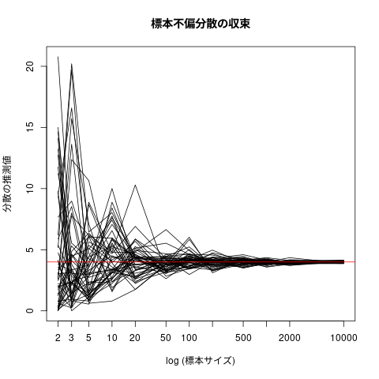

low of large numner (データ解析)
推定量の一致性 (大数の法則)の可視化
出展: http://tomoshige-n.hatenablog.com/entry/2016/06/07/233959
# set.seed(20211025) # 真の偏差 true = 2 # 標本サイズ n.cand = c(2,3,5,10,20,50,100,200,500,1000,2000,10000) # 標本数 j.num=50 # 標本不偏分散値の保存場所 res = matrix(0,length(n.cand),j.num) # i: 標本サイズの添字 # j: シミュレーション順番 for(i in 1:length(n.cand)){ for(j in 1:j.num){ # j番目のシュミュレーションのための # 標本サイズ n.cand[i]の # 正規分布にしたがう無作為標本の生成 x = rnorm(n.cand[i], mean = 0 , sd = true) # 標本の不偏分散値の保存 res[i,j] = var(x) } } for(j in 1:j.num){ if(j==1){ plot(log(n.cand),res[,j],type="l", ylim=c(min(res),max(res)), main="標本不偏分散の収束", ylab="分散の推測値", xlab="log (標本サイズ)",xaxt="n") axis(1, at=log(n.cand), labels=n.cand) }else{ points(log(n.cand),res[,j],type="l") ## type="l"は折れ線, "p"は点のみ } } # 母分散値 abline(h=true**2,col=2)

curve(x*dnorm(x,mean=1,sd=1), 0, 10)
curve(dnorm(x,mean=1,sd=1), 0, 10, add=TRUE)
curve((x-1)^2*dnorm(x,mean=1,sd=1), -5, 10)
curve(dnorm(x,mean=1,sd=1), -5, 10, add=TRUE)